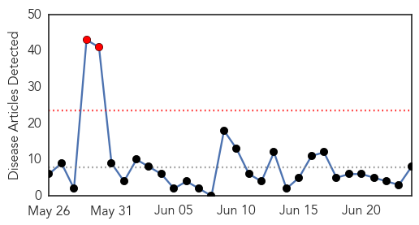

30 Day Trends
Web: 2 alerts, 0 warnings
Twitter: 0 alerts, 0 warnings
Top Articles:
- 0.985
- Measles spread continues in Hamilton
- 0.968
- Measles moves into Kansas during record breaking year
- 0.880
- 30-Month-Old Child Was The Source Of Measles Outbreak In Minnesota, Researchers Find
- 0.817
- Harvard T.H. Chan School of Public Health
- 0.698
- Hamilton measles surge highlights need for immunisation
- 0.600
- Measles Outbreak In Ohio Leads Amish To Reconsider Vaccines
- 0.534
- Vaccination a no brainer
- 0.533
- Measles Outbreak In Ohio Leads Amish To Reconsider Vaccines : Shots
Top Tweets:
-
No tweets found for Jun 24, 2014
Web/News Articles
Tweets

Article Locations

Article Confidences